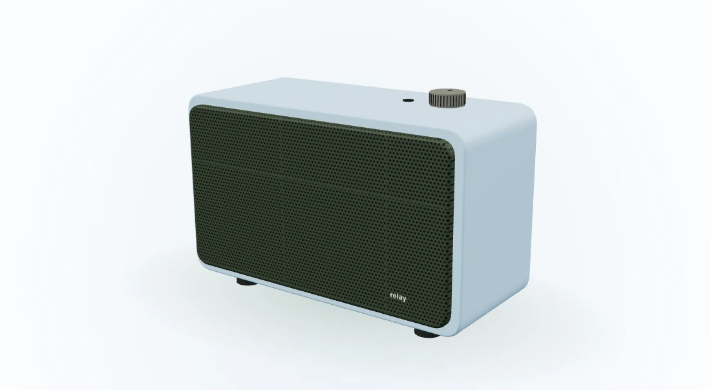

A continuous shell.
Soft corners and a single color wrap around the form.

Turn it a little. Try another color.
Find the version that
feels at home.
An illustrative speaker concept, not a product for sale. No audio playback or performance claims.
The assembly study separates three layers, then brings them back together. The same object, with nothing hidden.
Soft corners and a single color wrap around the form.
Two illustrated drivers sit behind the fine-patterned grille.
A small point of contact, placed just where you expect.